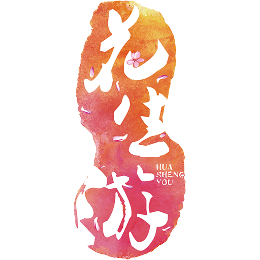
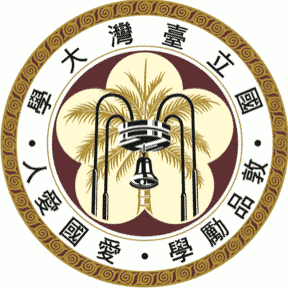
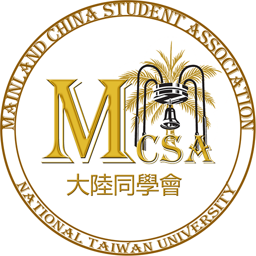
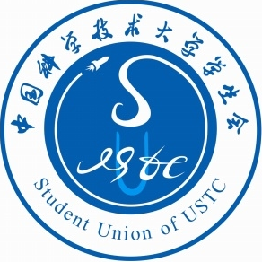
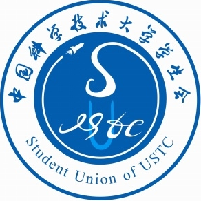

我是蟹导
-  花生玩趣 www.nutrip.cc 编号001的全栈开发工程师 没有产品经理没有美工的情况下搭建Prototype
自带产品经理属性的程序员
崇尚逻辑和真相的死理性派 斜杠青年
认同“代码美感影响生活质量”，不认同“我们团队万事俱备只欠一个程序员”
曾经是学生社团常客，现在“改过自新”成为了不爱推导公式不爱写前端的工程师。个人认为写代码比做PTT、参加路演更让人心情愉悦


 

自带产品经理属性的程序员
崇尚逻辑和真相的死理性派 斜杠青年
认同“代码美感影响生活质量”，不认同“我们团队万事俱备只欠一个程序员”
曾经是学生社团常客，现在“改过自新”成为了不爱推导公式不爱写前端的工程师。个人认为写代码比做PTT、参加路演更让人心情愉悦